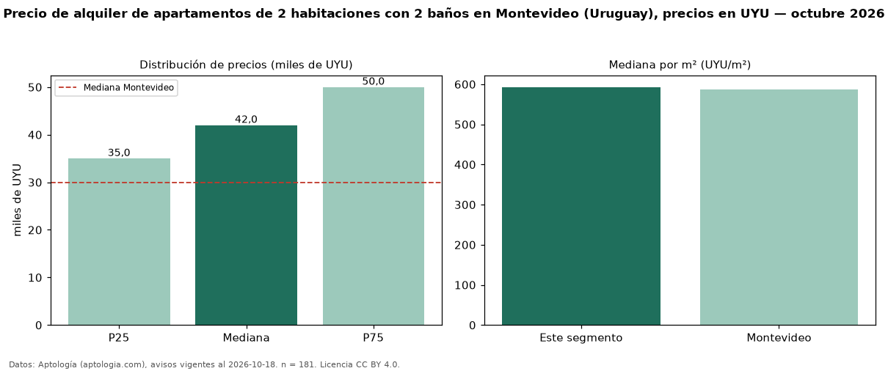

Precio de alquiler de apartamentos de 2 habitaciones con 2 baños en Montevideo (Uruguay), precios en UYU — octubre 2026
En Montevideo (Uruguay), la mediana de canon mensual de apartamentos de 2 habitaciones con 2 baños es UYU 42.000, según 181 avisos vigentes. Eso es 27 % más que la mediana de los apartamentos de 2 habitaciones en alquiler de Montevideo (UYU 33.200, n = 1.150); este segmento reúne el 16 % de esos avisos. Por metro cuadrado, la mediana es UYU 593/m² al mes (n = 177), 8 % por encima de los apartamentos de 2 habitaciones en alquiler de Montevideo (UYU 551/m²). El área mediana anunciada es 72 m². La cuota de mantenimiento o condominio mediana declarada es UYU 8.400 al mes (n = 159), aparte del canon. La mediana de todos los apartamentos en alquiler de Montevideo es UYU 30.000 (+40 % de diferencia). La mitad central de los avisos va de UYU 35.000 a UYU 50.000 (razón 1,4), una dispersión moderada. Datos: Aptología (aptologia.com), CC BY 4.0 — https://www.aptologia.com/uy/alquiler/montevideo. Archivos: PDF, CSV con las cifras y gráfica PNG.

| Avisos únicos | 181 |
|---|---|
| Percentil 25 | COP 35.000 |
| Mediana | COP 42.000 |
| Percentil 75 | COP 50.000 |
| Mediana por m² | COP 592 |
Fuente: avisos vigentes de portales inmobiliarios recopilados por Aptología, deduplicados (mínimo 30 avisos únicos por celda). Precios pedidos, no cerrados. Fecha: 2026-10-18.